舉辦期間限定活動「復刻:徳川廻天迷宮 大奥」！
為了應對從外部原因不明的攻擊，御主趕緊靈子轉移到做為該原因的特異點。
在化作巨大地下迷宮的江戸城・大奥舞台，以被謎團壟罩的最下層為目標開始探索。
本活動中，由複數階層構成的地圖，朝向下個階層前進。
從好幾條通路之中，持續發掘前往最深處的路線吧！
※本頁面皆為開發中圖片。會有與實際圖片相異的情況。 ※本活動是再調整在2019年舉辦的期間限定活動「徳川廻天迷宮 大奥」使之更容易遊玩的「復刻版活動」。 ※一部份的關卡為日後開放。
◆活動舉辦期間◆
2020年7月22日(三) 17:00～8月5日(三) 11:59
◆活動參加條件◆
滿足以下條件的御主才能參加
・通過第2部 第3章「Lostbelt No.3 人智統合真國 SIN 紅之月下美人」
※不需要通過亞種特異點(從Ⅰ到Ⅳ)。
◆有關從者真名的注意◆
在2018年12月31日(二) 23:00以後新配信的主線故事及期間限定活動、一部份關卡、宣傳活動及召喚中，會顯示隱藏真名的對象從者真名。
※2018年12月31日(一) 22:59前已經配信的主線故事、復刻活動、一部份關卡中不在此限。
◆關於在上次舉辦時獲得過報酬的注意◆
在2019年舉辦的期間限定活動「徳川廻天迷宮 大奥」獲得過特定報酬的情況，會如以下變化。
・在上次舉辦時獲得過「聖杯」的情況，本活動中會以「傳承結晶」代替「聖杯」做為通過報酬。
・在上次舉辦時獲得過「指令紋章」的情況，本活動的對象關卡中可獲得稀有稜鏡或魔力稜鏡代替「指令紋章」。
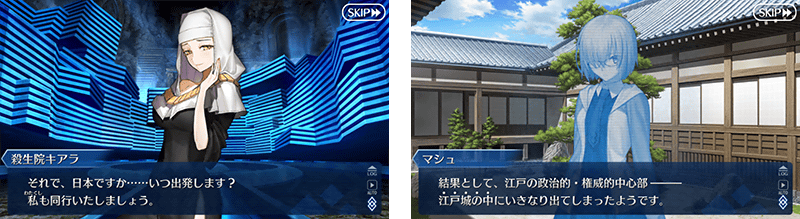
在「Fate/Grand Order」官方網站內首頁及Gallery，公開了期間限定活動「復刻:徳川廻天迷宮 大奥」的電視廣告。
敬請確認。
動畫製作：A-1 Pictures

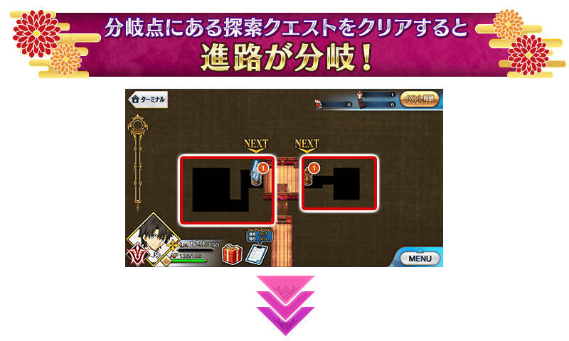
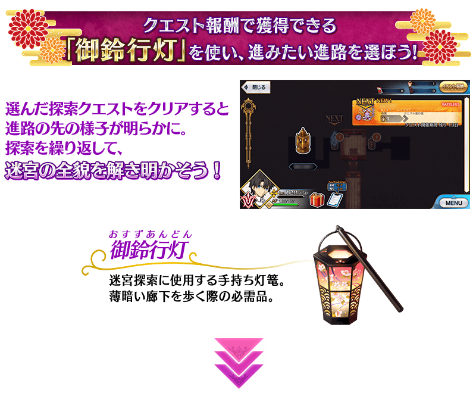
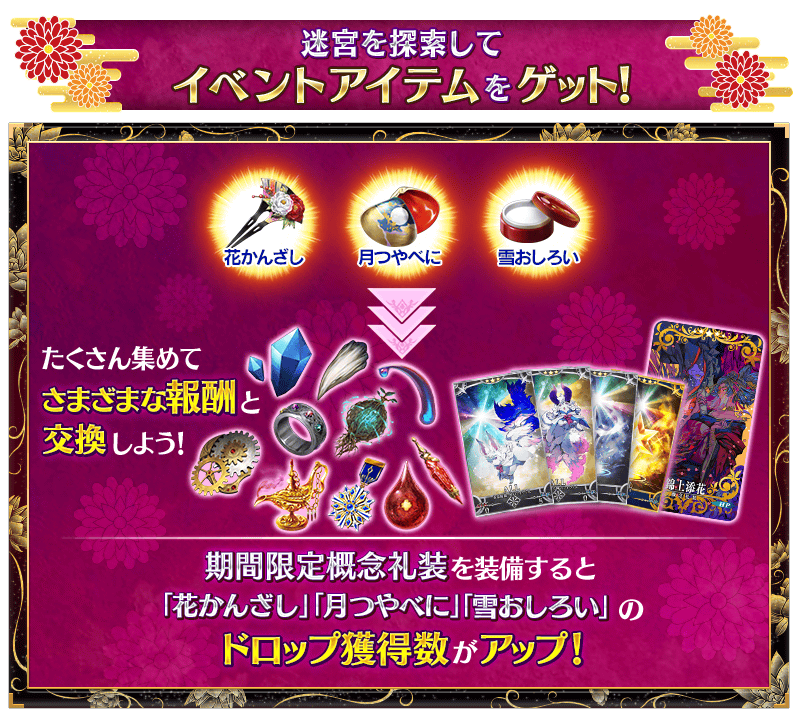


本活動中，會在特定時機出現複數的地點。地點內存在著為了前進該道路的關卡。
消耗「御鈴行燈」來施行任何的探索關卡的話會出現新的地點，可前進到道路的前方。
能在迷宮內複數道路之中選擇喜愛的一條路，自由地探索。
不過，根據道路會有繼續前進與在此打住的結果。
由於迷宮內暗藏著選擇前進道路的提示，以各式各樣的情報為依據，持續翻掘出前往大奥最深處的道路吧！
※消耗「御鈴行燈」的戰鬥中敗北或撤退的情況，不會消耗「御鈴行燈」。


探索迷宮的話可入手「印籠」。
入手「印籠」後，在活動關卡的戰鬥中可使用的御主技能，會從魔術禮裝變化成「印籠」獨自的技能。
※「印籠」入手後，無法使用裝備魔術禮裝的御主技能，魔術禮裝經驗值是裝備的魔術禮裝獲得。
※期間限定活動「徳川廻天迷宮 大奥」以外的關卡中，御主技能不會變化。
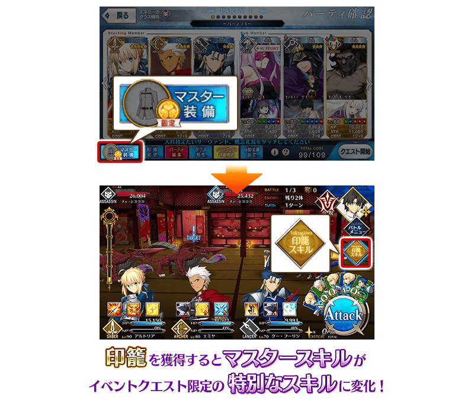
享受劇情的主線關卡如下列行程表開放。
推進主線關卡的話，會開放收集活動道具的自由關卡。
之後的自由關卡，是靠通過主線關卡和自由關卡來開放。
【關卡的舉辦期間】
| 關卡 | 舉辦期間 |
|---|---|
| 序幕～主線關卡第二幕 主線關卡幕間 自由關卡 |
2020年7月22日(三) 17:00～ 8月5日(三) 11:59 |
| 主線關卡第三幕 自由關卡 |
2020年7月23日(四) 17:00～ 8月5日(三) 11:59 |
| 主線關卡第四幕 自由關卡 |
2020年7月24日(五) 17:00～ 8月5日(三) 11:59 |
| 主線關卡第五幕 自由關卡 |
2020年7月25日(六) 17:00～ 8月5日(三) 11:59 |
| 主線關卡第六幕～第八幕 自由關卡 |
2020年7月26日(日) 17:00～ 8月5日(三) 11:59 |
| 主線關卡第九幕～終幕 自由關卡 |
2020年7月27日(一) 17:00～ 8月5日(三) 11:59 |
【7月28日(二) 17:00追記】
以通過期間限定活動「復刻:徳川廻天迷宮 大奥」主線關卡的御主做為對象，開放高難易度的「挑戰關卡」。
「挑戰關卡」就算通過後也不會消失，能無數次挑戰，可以變更從者和概念禮裝的組合等後再次挑戰。
※關卡通過報酬、戰利品、御主EXP、魔術禮裝EXP、絆點數只可在初次通過時獲得。
◆挑戰關卡開放時間◆
2020年7月28日(二) 17:00～
◆挑戰關卡參加條件◆
滿足以下條件的御主才能參加
・通過期間限定活動「復刻:徳川廻天迷宮 大奥」的主線關卡
◆挑戰關卡初次通過報酬◆
傳承結晶 1個
超值攻略方法・其1
對象從者在期間限定活動「復刻:徳川廻天迷宮 大奥」的活動關卡中，會得到自身的攻擊威力提升及在關卡通過時絆點數獲得量提升的加成！
強化對象從者，挑戰活動吧！
・得到2種活動加成的從者
下表的從者在活動關卡中會得到「自身的攻擊威力提升」與「絆點數獲得量提升」的加成。
※活動加成的效果量因從者而異。 ※瑪琇・基利艾拉特的「絆點數獲得量提升」效果，是所謂「我方全體含候補的絆點數獲得量提升」的效果。支援時此效果無效。
【活動加成的效果與對象從者】
| 自身的 攻擊威力 |
絆點數 獲得量 |
職階 | 稀有度 | 從者名 |
|---|---|---|---|---|
| ＋100% | 只限自身 ＋50％ |
Assassin | ★★★★★ | 伽摩 |
| ＋50% | 只限自身 ＋20％ |
Saber | ★★★★ | 柳生但馬守宗矩 |
| Lancer | ★★★★ | 帕爾瓦蒂 | ||
| Caster | ★★★★★ | 雪赫拉莎德 (不夜城的Caster) | ||
| Assassin | ★ | 瑪塔・哈里 | ||
| Alterego | ★★★★★ | 殺生院祈荒 | ||
| 我方全體 ＋5％ |
Shielder | ★★★ | 瑪琇・基利艾拉特 |
・其他的從者
下表的從者在活動關卡中會得到「自身的攻擊威力提升」的加成。
【活動加成的效果と對象從者】
| 自身的 攻擊的威力 |
職階 | 稀有度 | 從者名 |
|---|---|---|---|
| ＋30% | Saber | ★★★★★ | 沖田總司 |
| ★★★★★ | 紅閻魔 | ||
| ★★★★★ | 宮本武藏 | ||
| ★★★★★ | 兩儀式 | ||
| ★★★★ | 鈴鹿御前 | ||
| Archer | ★★★★★ | 清少納言 | |
| ★★★★ | 淺上藤乃 | ||
| ★★★★ | 織田信長 | ||
| ★★★★ | 巴御前(Archer・地獄) | ||
| ★★★ | 俵藤太 | ||
| Lancer | ★★★★ | 長尾景虎 | |
| ★★★ | 寶藏院胤舜 | ||
| ★★ | 武藏坊弁慶 | ||
| Rider | ★★★★ | 坂田金時 | |
| ★★★★ | 坂本龍馬 | ||
| ★★★ | 牛若丸 | ||
| Caster | ★★★★★ | 玉藻前 | |
| ★★★★★ | 紫式部 | ||
| Assassin | ★★★★★ | 刑部姬 | |
| ★★★★★ | 酒吞童子 | ||
| ★★★★ | 加藤段藏 | ||
| ★★★★ | 望月千代女(Assassin・樂園) | ||
| ★★★★ | 兩儀式 | ||
| ★★★ | 岡田以藏 | ||
| ★★★ | 風魔小太郎 | ||
| ★ | 佐佐木小次郎 | ||
| Berserker | ★★★★★ | 坂田金時 | |
| ★★★★★ | 土方歲三 | ||
| ★★★★★ | 源賴光 | ||
| ★★★★ | 茨木童子 | ||
| ★★★★ | 鬼女紅葉 | ||
| ★★★★ | 茶茶 | ||
| ★★★ | 清姬 | ||
| ★★★ | 森長可 | ||
| Ruler | ★★★★★ | 天草四郎 | |
| Avenger | ★★★★★ | 魔王信長(織田信長) | |
| Alterego | ★★★★★ | 沖田總司〔Alter〕 | |
| ★★★★★ | 志度內 | ||
| Foreigner | ★★★★★ | 葛飾北齋 |
※就算成為對象從者，也會有不在本活動的主線劇情登場的情況。。 ※「★5(SSR)織田信長」靈基再臨到第3階段的話名稱會變成「★5(SSR)魔王信長」。 ※自7月17日(五) 17:00，在從者選擇畫面和從者強化畫面等，追加活動加成篩選器。由於是只顯示於活動活躍從者的便利功能，敬請活用。
超值攻略方法・其2
裝備活動限定概念禮裝與期間限定概念禮裝的話，在活動中會受到各式各樣的好處。
裝備可靠活動道具交換入手的活動限定概念禮裝「★5(SSR)錦上添花」的話，在活動關卡中自身的攻擊威力會提升。
另外，裝備在聖晶石召喚Pick Up的期間限定概念禮裝「★5(SSR)姫様行脚」「★4(SR)春うらら」「★3(R)火消魂」的話，活動道具「花髮簪」「月胭脂」「雪香粉」各自的掉落獲得數會提升。
※請注意各關卡的道具掉落率並非100％。
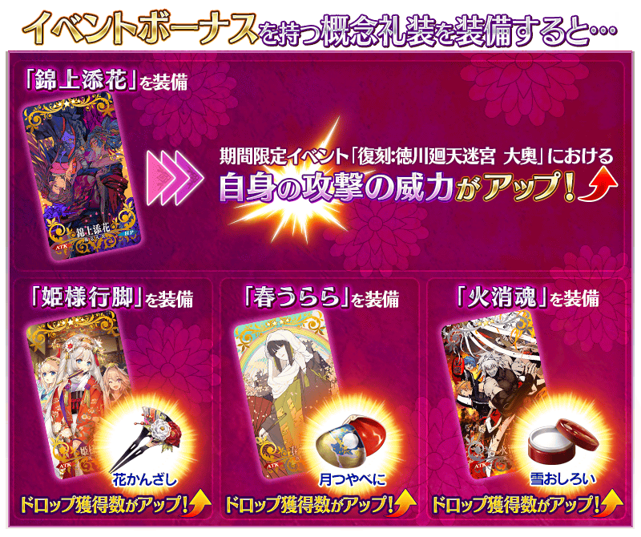

| 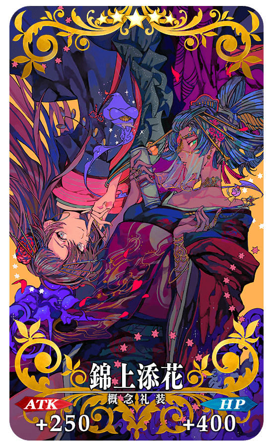 |
★★★★★SSR |


|
【活動限定】
|
| 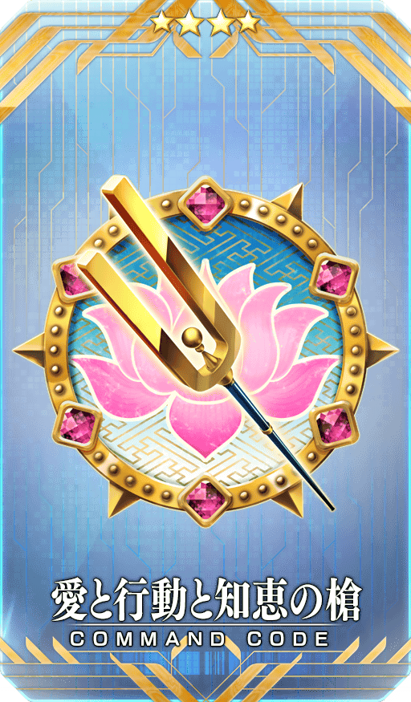 |
★★★★SR
|

|
★★★R
|
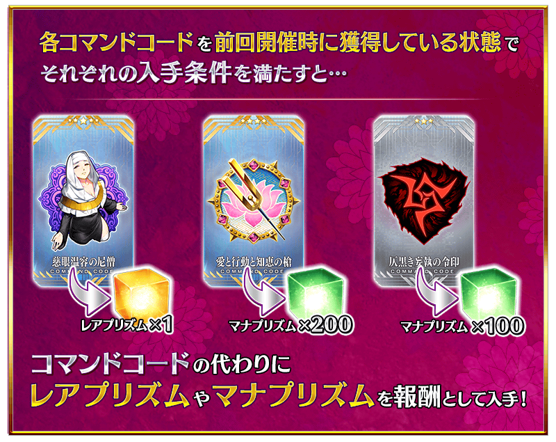
◆關於活動報酬指令紋章的注意◆
在2019年舉辦的期間限定活動「徳川廻天迷宮 大奥」中獲得過同樣指令紋章的情況，可獲得稀有稜鏡或魔力稜鏡代替指令紋章。
※對象指令紋章的稀有度對應的可獲得報酬有異。
※就算靈基變還(販賣)在期間限定活動「徳川廻天迷宮 大奥」獲得過的各指令紋章而消失的情況，在期間限定活動「復刻:徳川廻天迷宮 大奥」中的報酬仍會變化成稀有稜鏡和魔力稜鏡。
活動道具可自點擊管理室(ターミナル)畫面右上「活動報酬」鍵所顯示的「活動道具交換」畫面，交換以下的道具。
◆交換期間◆
2020年7月22日(三) 17:00～8月12日(三) 11:59
※活動道具交換期間結束後「花髮簪」「月胭脂」「雪香粉」會消失。
◆能用花髮簪交換的道具◆
 |
【活動限定概念禮裝】 【技能強化＆靈基再臨素材】 【靈基再臨素材】 【其他道具】 |
◆能用月胭脂交換的道具◆
 |
【活動限定概念禮裝】 【技能強化＆靈基再臨素材】 【靈基再臨素材】 【其他道具】 |
◆能用雪香粉交換的道具◆
|
【活動限定概念禮裝】 【技能強化＆靈基再臨素材】 【其他道具】 |
【7月22日(三) 17:00追記】
強化「★5(SSR)雪赫拉莎德(不夜城的Caster)」「★5(SSR)殺生院祈荒」的特別關卡「從者強化關卡」，在迦勒底之門永久追加。
不僅進行對象從者的強化，也可獲得聖晶石做為關卡通過報酬。
※請注意在從者強化關卡沒有文字冒險部份。
◆追加時間◆
2020年7月22日(三) 17:00～
◆開放條件◆
持有的強化對象從者，必須使其最終再臨。
另外，關於一部份的從者必須真名判明。
※未持有對象從者的話，不會出現關卡。
※關卡沒有舉辦期限。
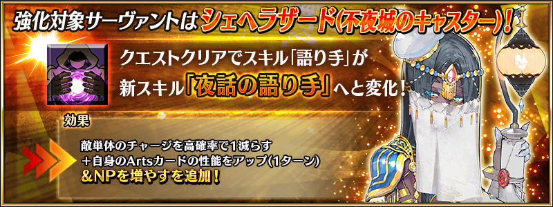
下述的期間中，主線關卡第2部 第3章為止的消耗AP變成1/4！(就算在戰鬥中撤退的情況也會是同様的消耗量)
尚未通過主線關卡的御主，請務必活用此機會！
◆舉辦期間◆
2020年7月17日(五) 17:00～7月31日(五) 11:59
◆對象關卡◆
主線關卡第1部(從特異點F到終局特異點)
主線關卡第2部(從第1章到第3章)
※目前在主線關卡第2部 第3章為止的AP消耗量是永久變成1/2的狀態。因此，宣傳活動結束後，該主線關卡的AP消耗量會變成1/2。 ※請注意亞種特異點(從Ⅰ到Ⅳ)、自由關卡為對象外。
介紹在2020年7月22日(三)維修後反映的更新內容之中代表性的內容。
◆追加時間◆
2020年7月22日(三) 17:00～()
戰鬥中的狀態效果顯示欄擴張
擴張對我方從者和敵人賦予複數狀態效果時的顯示數。
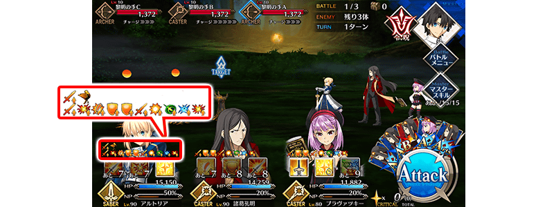
在攻擊時發動的效果修改成以適當的時機顯示
在攻擊時發動的效果有分「在傷害前發動」與「在傷害後發動」，以往沒有統一顯示時機導致難以判辦，修改後「在傷害前發動」會在最初的傷害時，「在傷害後發動」則在最後的傷害時顯示。
※透過此修改，在傷害前發動的指令紋章效果，變得會在最初的傷害時顯示。 ※只是顯示時機的修改，效果發動時機沒有變更。
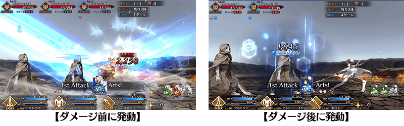
其他還有，期間限定「復刻 徳川廻天迷宮 大奥Pick Up召喚(每日交替)」同時舉辦！
關於詳情，請自下述橫幅確認。
■「復刻 徳川廻天迷宮 大奥Pick Up召喚(每日交替)」詳細情報